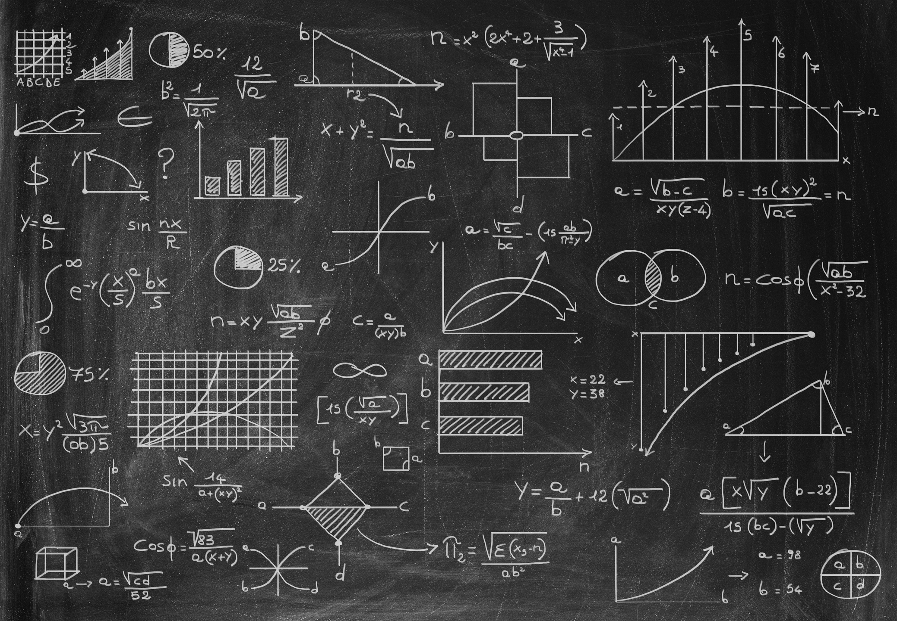
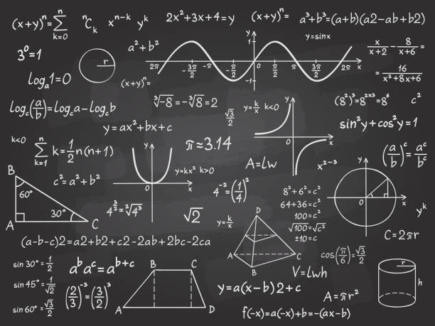
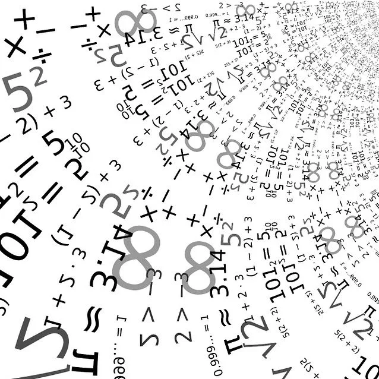
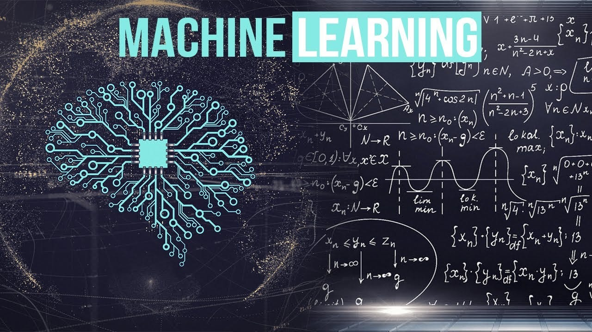
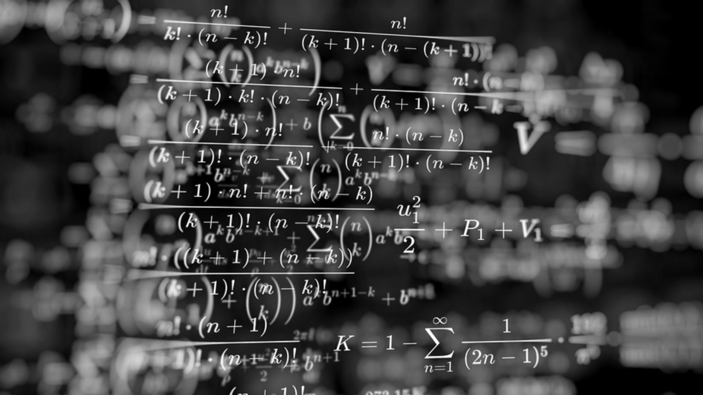

The Fascinating World of Mathematics
Mathematics is not just about numbers—it's a profound way of understanding the world around us. From ancient theories to modern applications, mathematics serves as the foundation for technological advancement, scientific discovery, and engineering innovation.
Our website explores some of the most exciting and crucial fields of mathematical research today. Whether you're a student, researcher, or enthusiast, we hope to inspire and guide you through these rich topics.
Explore Key Areas of Mathematics Research
Algebraic Geometry
Algebraic geometry is a rich field at the intersection of geometry and algebra. It studies the solutions to systems of polynomial equations, uncovering a wealth of geometric structures. This branch of mathematics is essential in fields such as cryptography, string theory, and more.
Key Topics: Varieties, Singularities, Sheaf Theory, Computational Algebraic Geometry
Number Theory
Number theory is one of the oldest branches of mathematics, focused on the properties and relationships of numbers. It has profound implications in modern cryptography, coding theory, and even quantum computing.
Key Topics: Prime Numbers, Diophantine Equations, Modular Forms, Cryptography
Topology
Topology is the study of properties that remain invariant under continuous deformations such as stretching or bending. It has applications in physics, biology, and computer science, especially in the study of networks and data analysis.
Key Topics: Topological Spaces, Continuity, Homeomorphisms, Knot Theory

Machine Learning
Machine learning, a rapidly growing field, uses mathematical models to enable computers to learn from data and make decisions. It draws heavily from linear algebra, statistics, and optimization. The mathematics behind machine learning algorithms shapes the future of AI.
Key Topics: Neural Networks, Gradient Descent, Supervised and Unsupervised Learning, Deep Learning
About the Research
Our team of mathematicians, researchers, and educators have dedicated years to advancing our understanding of mathematical principles and their applications. We aim to provide accessible resources, research papers, tutorials, and the latest findings in the areas of Algebraic Geometry, Number Theory, Topology, and Machine Learning.
Whether you're an aspiring mathematician or an experienced researcher, we invite you to delve into these fascinating subjects with us.
Get Involved
We welcome contributions and collaboration from mathematicians and researchers around the world. If you're interested in contributing to our projects, sharing your research, or simply want to connect, feel free to reach out!
Email us at research@mathworld.com.